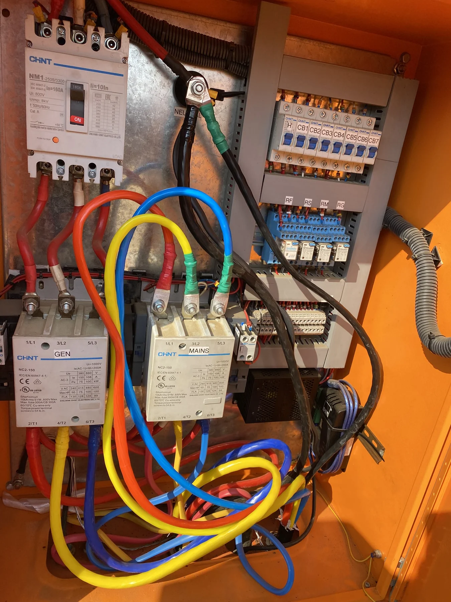
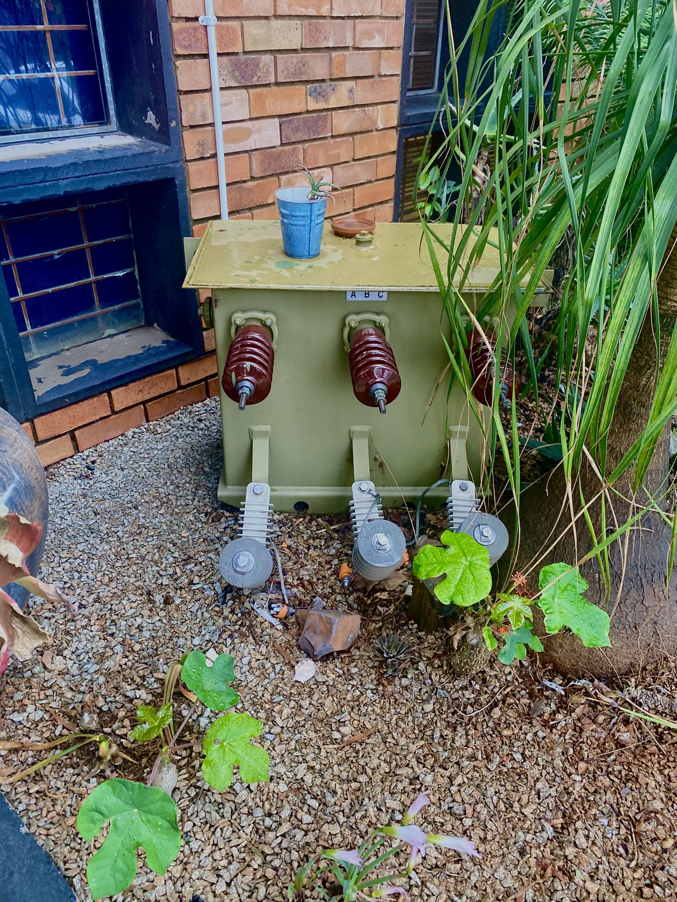
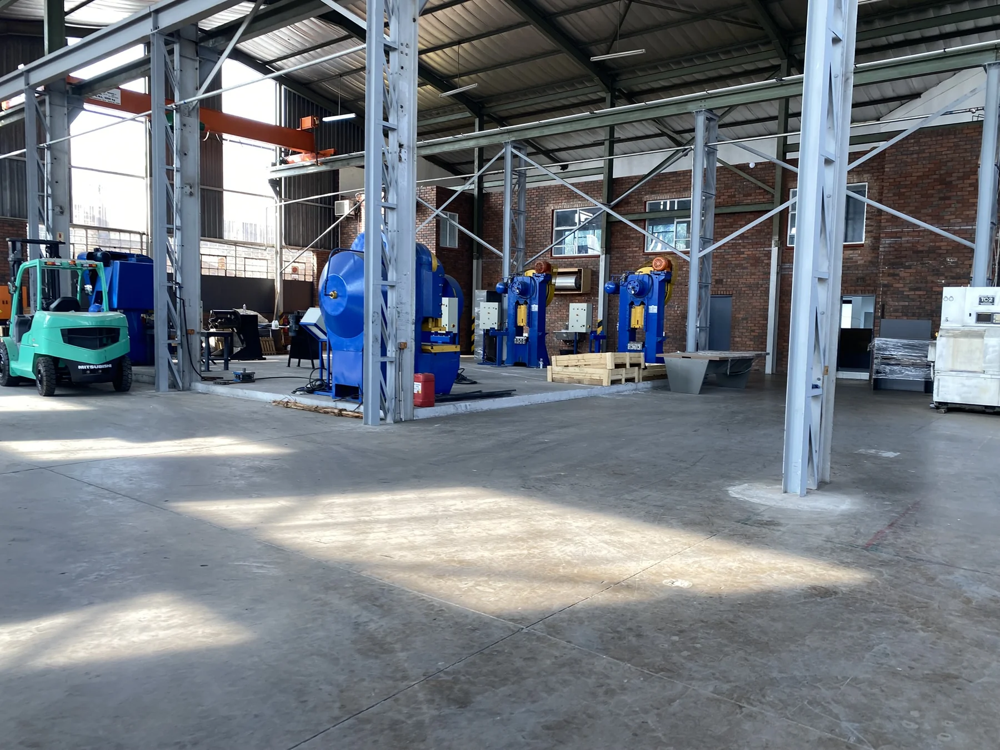
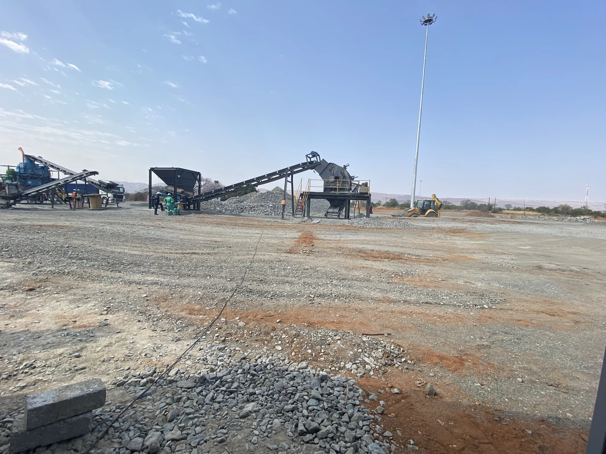

A field record
The work begins
with what is there.

Panels
Standards and Safety
In the detail

Field view

Site landscape

Back on site
The tools change. The engineering mindset remains. Innovation through excellence.